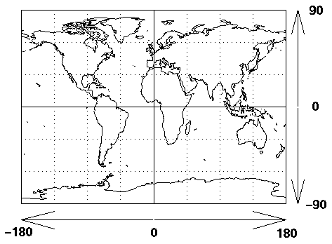

What is the definition of latitude and longitude?
In order to input latitude and longitude, you need to know how they are defined.

Latitude is measured from the equator, with positive values going north and negative values going south.
Longitude is measured from the Prime Meridian (which is the longitude that runs through Greenwich, England),
with positive values going east and negative values going west. So, for example, 65 degrees west longitude,
45 degrees north latitude is -65 degrees longitude, +45 degrees latitude.
How do you convert to
Degrees
from
Degrees:Minutes:Seconds?
The latitude and longitude are input in degrees, so you might need to convert to degrees from
degrees:minutes:seconds. There are 60 seconds in 1 minute and 60 minutes in 1 degree.
So, for example:
65:45:36 south latitude converts to
-(65 degrees +
45 minutes * (1 degree/60 minutes) +
36 seconds * (1 minute/60 seconds) * (1 degree/60 minutes))
= -65.76 degrees latitude
Go back